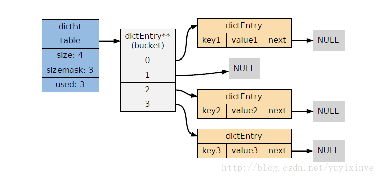

主要涉及到 dict.c 和 dict.h 文件
哈希表:
|
|
table 属性是一个数组，数组中的每个元素都是一个指向 dictEntry 结构体的指针，每个 dictEntry 保存着一个键值对:
|
|

字典由 dict 结构体表示:
|
|
ht[0] 用于存储数据，ht[1] 用于 rehash 的时候使用，当没有进行 rehash 的时候，rehashidx 的值为 -1
dictType 保存了一簇用于操作特定类型键值对的函数:
|
|
普通状态下的词典:
计算键的哈希值:
|
计算索引值:
|
|
Redis 目前使用两种不同的哈希算法：
1. MurmurHash2 32 bit 算法：这种算法的分布率和速度都非常好。Redis，Memcached，Cassandra，HBase，Lucene, Hadoop, Nginx 等都在用 MurmurHash 算法，主要是因为算法快，速度快: 与 MD5 这些讲究安全性的摘要算法比，Redis 们内部为主键做个 Hash 而已，就不需要安全性了，因此 Google 家的 MurmurHash 这种 non-cryptographic 的速度会快几十倍
有些人看到 murmur 就想到了陌陌就想到了别的，其实是 multiply and rotate 的意思，因为算法的核心就是不断的
|
|
2. 基于 djb 算法实现的一个大小写无关散列算法：具体信息请参考 http://www.cse.yorku.ca/~oz/hash.html 。
使用链地址法